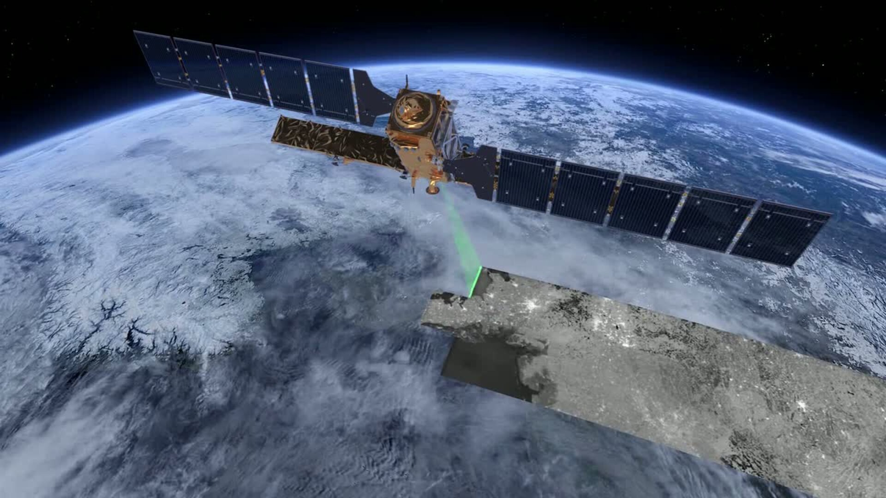

Illustration of Copernicus' main mission: Earth observation
Copernicus is the Earth observation component of the European Union Space Programme, managed by the European Commission and implemented in partnership with the EU Member States, the European Space Agency (ESA), the European Organisation for the Exploitation of Meteorological Satellites (EUMETSAT), the European Centre for Medium-Range Weather Forecasts (ECMWF), the Joint Research Centre (JRC), the European Environment Agency (EEA), the European Maritime Safety Agency (EMSA), Frontex, SatCen and Mercator Océan.
The programme aims at achieving a global, continuous, autonomous, high quality, wide range Earth observation capacity. Providing accurate, timely and easily accessible information to, among other things, improve the management of the environment, understand and mitigate the effects of climate change, and ensure civil security.
Since 2021, Copernicus is a component of the EU Space Programme, which aims to bolsters the EU Space policy in the fields of Earth Observation, Satellite Navigation, Connectivity, Space Research and Innovation and supports investments in critical infrastructure and disruptive technologies.
{kind=link}